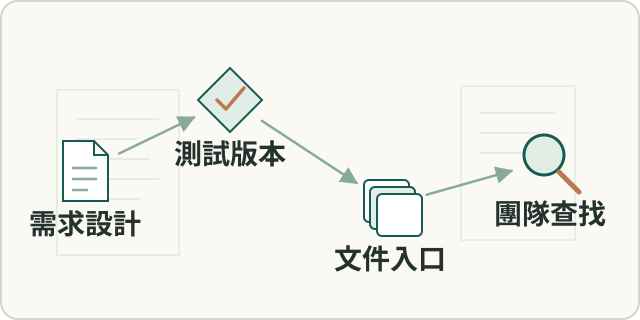

工程實務
工程文件與知識系統
整理需求、設計、測試和版本文件的追溯關係，建立持續維護的內部文件入口。
- 我的角色
- 本人參與文件資訊架構及治理，將底層工程紀錄連到依讀者分層的文件站及維護流程。

工作流程示意（點圖放大）要解決的問題
需求、測試與版本散落，各角色難從共同依據理解現況。
輸入、處理與產出
- 輸入
- 需求、設計、程式變更、測試與版本紀錄。
- 處理方式
- 依讀者建立文件入口，手冊對UI、安裝文件對部署、規格與引用各自核對。
- 產出
- 讓主管、開發與現場協作角色回查同一套進度及決策依據。
適用範圍
入口與維護流程已建立；採用成效、文件正確性與版本一致性仍需分別檢查。
核心問題與我的做法
讓不同角色從同一套證據讀到進度
老闆、主管、開發同事與FAE需要不同入口，單純保存文件仍難以理解目前風險和狀態。
以共同的工程證據支援不同讀者入口。我參與文件資訊架構與維護流程，將程式變更、測試和風險整理成系統、操作、手冊及紀錄導航。
讓各角色可從同一證據基礎回查進度、風險與決策，支援非同步協作及接手。
交付文件共用版本，內容仍各自對準真實來源
手冊、安裝文件、規格及簡報用途不同，若複製成同一份摘要，容易與真實UI或部署程序脫節。
保留共同版本依據，同時讓各類文件各自核對真實來源。我參與建立手冊對 UI、安裝文件對部署流程、規格保留引用及簡報對受眾問題的核對方式。
建立各類交付文件的核對原則，將版本一致與內容正確分開檢查；仍保留人工檢查及漂移追蹤。
成果與驗證
建立可搜尋的文件入口，連結設計、issue、測試、release、手冊與管理摘要。
VitePress · Markdown